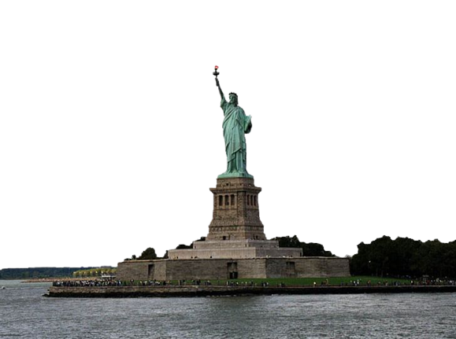

Home
Welcome
Good evening, Mr. And Ms. America and all ships at sea!
The American Shore is a strictly independent and clear cut news website that aims to hold the duopoly accountable and provide news from an alternative lense.
Articles
- Why Muslim Americans Should Look to the Pirate Party - February 17, 2022
…or you can find more in the archives.